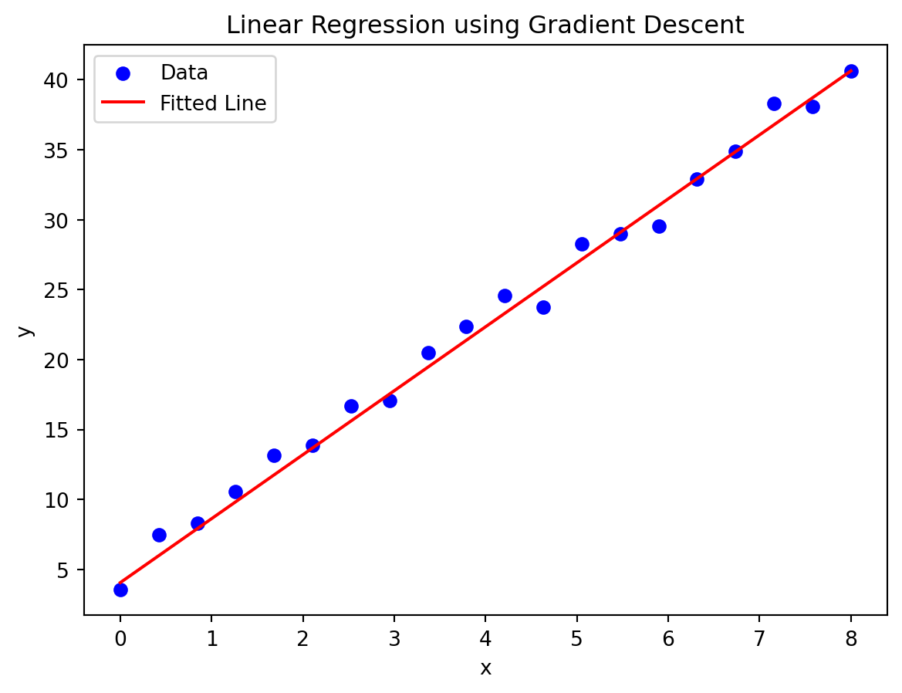

import numpy as np
import matplotlib.pyplot as pltCreating a Linear Regression Model using Optimisation with the Gradient Descent Algorithm
Python
Optimisation
Machine Learning
Numerical Methods
Using optimisation with the gradient descent algorithm to minimise the loss function to create a linear regression model between a set of x and y data.
Introduction
Setting up the Problem
Libraries
Numpy is used for mathematical and random functions. Matplotlib is used to plot the linear regression at the end of the program.
Simulated Data
First, we must simulate some data for the model to fit. In reality, this could be any set of independent and dependent data.
An equally spaced list of 20 x coordinates between \(x=0\) and \(x=8\) is created to begin.
The simulated data I have used is \(y=4.513x+4.421\) with some noise introduced using the np.random.normal function, which generates random numbers from a normal (Gaussian) distribution with a mean of 0 and a standard deviation of 1, to simulate real data.
# Creates simulated data for the regression to fit
x = np.linspace(0,8,20)
y = 4.513 * x + 4.421 + np.random.normal(0, 1, len(x))Linear Model
Now, we need to define the model to fit the data in the form \(y=mx+c\). The coefficients or parameters in a regression model are denoted by the symbol \(\theta\), and are used to determine the gradient and y-intercept for the training data. Therefore, for the purpose of this linear regression model, the equation used is \(y=\theta_{0}x+\theta_{1}\). This equation could be modified to fit the data points better, for example, if a cubic relationship would be more appropriate, then \(y=\theta_{0}x^3+\theta_{1}x^2+\theta_{2}x+\theta_{4}\) could be used. However, for the simplicity of this demonstration, a linear regression is used.
# Defines the model
def model(theta, x):
return theta[0] * x + theta[1]Initial Guess
A list is used to store the initial guess for each value of theta from the model. The values of the coefficients are set to \(\theta_{0}=0.0\) and \(\theta_{1}=0.0\) respectively, but this could be changed to the specification of the user.
# Initial guess of theta
theta = [0.0, 0.0]Loss Function
The loss function needs to be defined so that it can be minimised using optimisation. The parameters past to this function are the coefficients and args, a tuple containing x and y data for the model. As you can see, this x and y data is unpacked from the tuple for use in the function. To create the function, we will make use of Mean Absolute Error (MAE). This is initially set to zero. To calculate the MAE, the equation \(MAE=\frac{1}{n}\sum_{i=1}^n|y_i-\hat{y_i}|\) is used. The code calculates the absolute difference between, \(y_i\), which reprsents the actual value of the i-th data point in the data set, and \(\hat{y_i}\), the predicted value for the i-th data point given by passing the value for theta and the i-th x data point. Alternatively, Mean Squared Error could be used, which would use the equation \(MSE=\frac{1}{n}\sum_{i=1}^n({y_i-\hat{y_i}})^2\).
# Loss function
def loss(theta, args):
x_data,y_data = args
mae = 0
for i in range(len(x_data)):
mae += abs(model(theta,x_data[i])-y_data[i])
return mae / len(x_data)Processing
Calculating the Numerical Derivative
This code is used to find the gradient of the loss function with respect to the parameters (theta) using the finite difference method. The function is passed the parameters, the args tuple and \(\epsilon\) is set to \(1e^{-5}\). Initially, the NumPy array of grad values is set to zero, such that grad = [0.0, 0.0], corresponding to the gradient of each parameter. Now, the gradient is calculated using the forward method of finite differences. A copy of theta is used as to not effect its value when it is perturbed. Theta is incremented by \(\epsilon\). The equation \(f'(x)\approx\frac{f(x+h)-f(x)}{\epsilon}\) is used to approximate the derivative for future use.
# Gradient calculation for each value of theta
def gradient(theta, args, eps=1e-5):
grad = np.zeros(len(theta))
for i in range(len(theta)):
theta_eps = theta.copy()
theta_eps[i] += eps
grad[i] = (loss(theta_eps, args) - loss(theta, args)) / eps
return gradOptimisation
This function is almost identical to the one used in my previous blog post, so check out that post for more detail. The major difference is the use of np.linalg.norm to find the Euclidean norm (the magnitude) of the gradient vector.
# Performs gradient descent algorithm to minimse loss function
def descent(loss, gradient, theta, args, alpha=1e-3, tol=1e-4, max_iters=10000):
for i in range(max_iters):
grad = gradient(theta, args)
if np.linalg.norm(grad) < tol:
break
theta = theta - alpha * grad
return thetaPerforming Optimisation
This calls the function which optimises the model. theta_opt stores the optimised values for each theta. It passes the loss function, gradient calculation function, the two parameters and the set of x and y data (which is passed as a tuple).
# Perform gradient descent to minimize the loss
theta_opt = descent(loss, gradient, theta, (x, y))Output
Creating Test Data
Now, we need to generate the test data for the model. This would be used to evaluate the effectiveness of the model, but since this example consists of simulated data this would be somewhat pointless. In this instance, the test data is used to plot the graph of the regression
# Test data
x_test = np.linspace(0,8,100)
y_test = model(theta_opt,x_test)Graph
This plots the data. Scatter points display the x and y coordinates used to train the model and the fitted line is also displaced.
The parameters of the plot are defined, an appropriate title is set, the x and y labels are displayed, the legend of the graph (which displays the label for the plots) and the graph is displayed.
plt.scatter(x, y, label="Data", color="blue")
plt.plot(x_test, y_test, label="Fitted Line", color="red")
# Sets parameters of the plot
plt.title("Linear Regression using Gradient Descent")
plt.xlabel("x")
plt.ylabel("y")
plt.legend()
plt.show()
Optimised Values for the Gradient and y-intercept
Finally, we print the optimised parameters.
# Output the optimized parameters
print(f"Optimized parameters: {theta_opt}")Optimized parameters: [4.52535465 3.79420733]